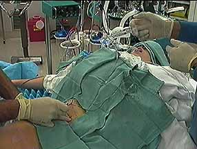

The block is performed with the patient under general anesthesia. After a negative aspiration and negative test dose, local anesthetic is injected in divided doses. General anesthesia may affect the sensitivity of an epinephrine test dose.